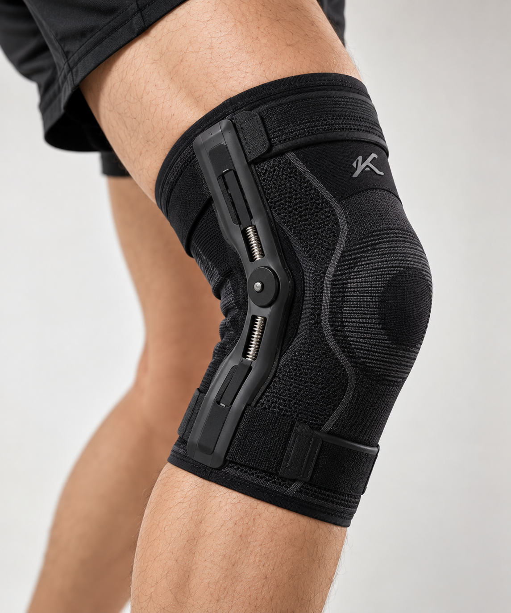

A more considered fit
A sleeve format with straps, designed to sit around the knee and make everyday wearing feel straightforward.
Life doesn’t stand still. We’re building knee support that moves with you — bringing thoughtful mechanics and connected technology to everyday movement.

Our first product brings a knee sleeve and adjustable mechanical support together, with people experiencing arthritis and other knee problems at the heart of its design.
A sleeve format with straps, designed to sit around the knee and make everyday wearing feel straightforward.
Mechanical screws provide an adjustable support approach. A practical foundation for the first Konarc product.
Developed with the daily challenges of knee discomfort in mind, from a familiar routine to the next small step.
Product development is ongoing. Final specifications and availability will be shared as the product progresses.
We’re developing a companion app that connects with multiple sensors in the sleeve — bringing signals from your knee support into one place.
A connected view of sensor information, designed to make movement easier to understand.
A foundation for more personal insights as our hardware and software develop together.
See patterns in your movement.
Interactive concept preview. Illustrative data and interface;
final app features may change.
Starting with physical support. Working toward a future that brings mechanical design, sensors and TENS technology together.
Our first knee sleeve focuses on mechanical support, with adjustable screws and a wearable design. It’s the starting point for the Konarc product journey.
We believe better support begins with listening to the people who need it.
Konarc is an Indian startup exploring a more thoughtful approach to knee support. Our focus is on people living with arthritis and knee problems, and the everyday moments that matter to them.
From our first mechanical sleeve to a future with connected sensors and TENS, we’re bringing hardware and technology together — one considered step at a time.
The first product is a knee brace sleeve with mechanical screws for adjustable support. The product is being developed; release timing and final specifications have not been announced.
Our primary focus is people experiencing arthritis and other knee problems. Suitability for an individual will depend on the final product and professional advice.
The app is being developed to connect with multiple sensors in the sleeve. The screen shown on this website is an interactive concept, not a live sensor connection or a finished app.
TENS integration is planned for a future product. It is not presented as a feature of the first mechanical sleeve. No clinical outcomes or regulatory approvals are claimed on this website.
Purchase details, pricing and launch timing have not yet been announced. This website introduces the Konarc vision and product development roadmap.